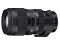
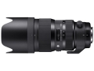

器材库 > APS画幅镜头 > DC 50-100/1.8 HSM Art

详细规格
镜头类型
远摄变焦镜头
发布日期
2016-02-23
焦距
50mm-100mm
等效35mm画幅焦距
75mm-150mm
最大光圈
f/1.8
最小光圈
f/16
视角（对角）
31.7°-16.2°
镜头结构
21片/15组
光圈叶片
9片
最近对焦距离
95cm
最大放大倍率
1:6.7
驱动马达
HSM（超声波马达）
滤镜口径
82mm
镜头卡口
Canon EF, Nikon AF, Sigma SA
防抖
否
颜色
黑色
尺寸
93.5×170.7mm
重量
1490g
附件
镜头包，花瓣形遮光罩（LH880-02）
匿名网友2017-10-24 16:404.75 分
操作性 4.50耐用性 5.00性价比 5.00解像力 4.50色彩还原 4.50机械结构 5.00
962042017-06-02 14:144.75 分
操作性 5.00耐用性 4.50性价比 5.00解像力 5.00色彩还原 4.50机械结构 4.50
alisdair2016-06-29 23:224.5 分
操作性 4.50耐用性 4.50性价比 4.50解像力 4.50色彩还原 4.50机械结构 4.50
产品图 / 样片
DC 50-100/1.8 HSM Art

DC 50-100/1.8 HSM Art
评测 / 相关文章
- 详细内容 （存档）
- 再续黑科技神话 适马50-100/1.8测评 （存档）
- ［试用］与适马黑科技的完美邂逅 适马50-100/1.8 art （存档）
- ［资讯］适马镜头荣获 2016美国LUCIE技术大奖 （存档）
- ［资讯］EISA公布2016-2017年度器材奖项 （存档）
- ［试用］适马50-100/1.8实拍样张 （存档）
- ［资讯］适马镜头荣获TIPA2016三项大奖 （存档）
- ［资讯］适马50-100/1.8镜头开始预订 （存档）
- ［专题］向突破致敬 评适马黑科技新品 （存档）